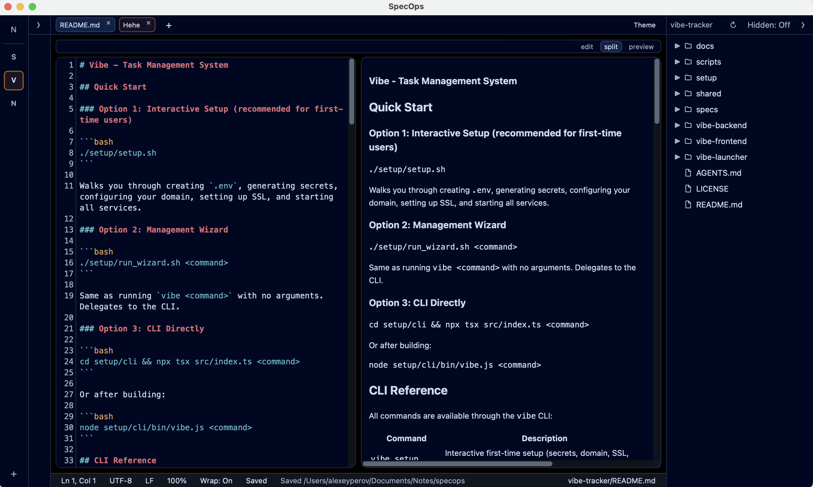
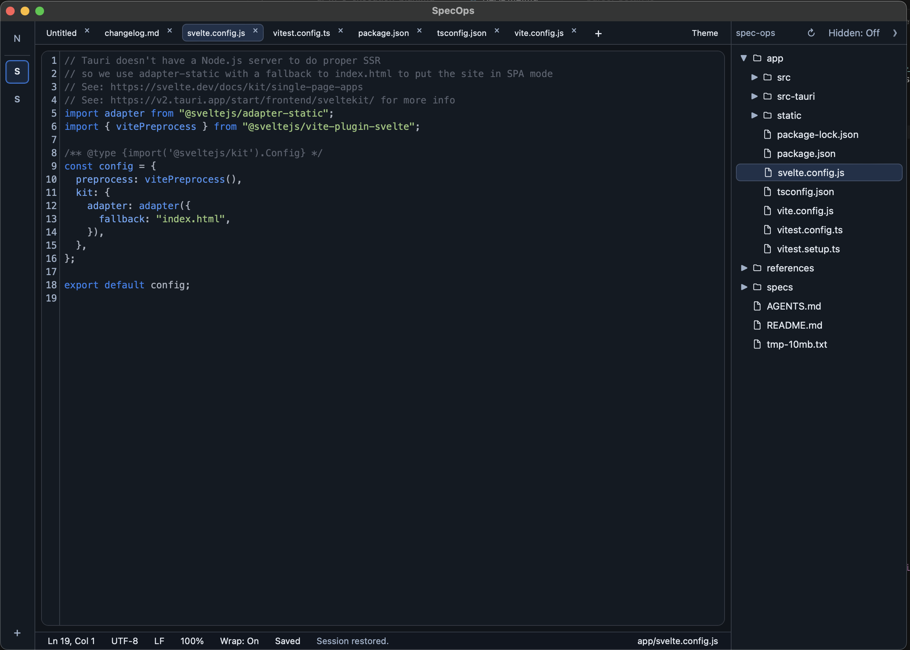
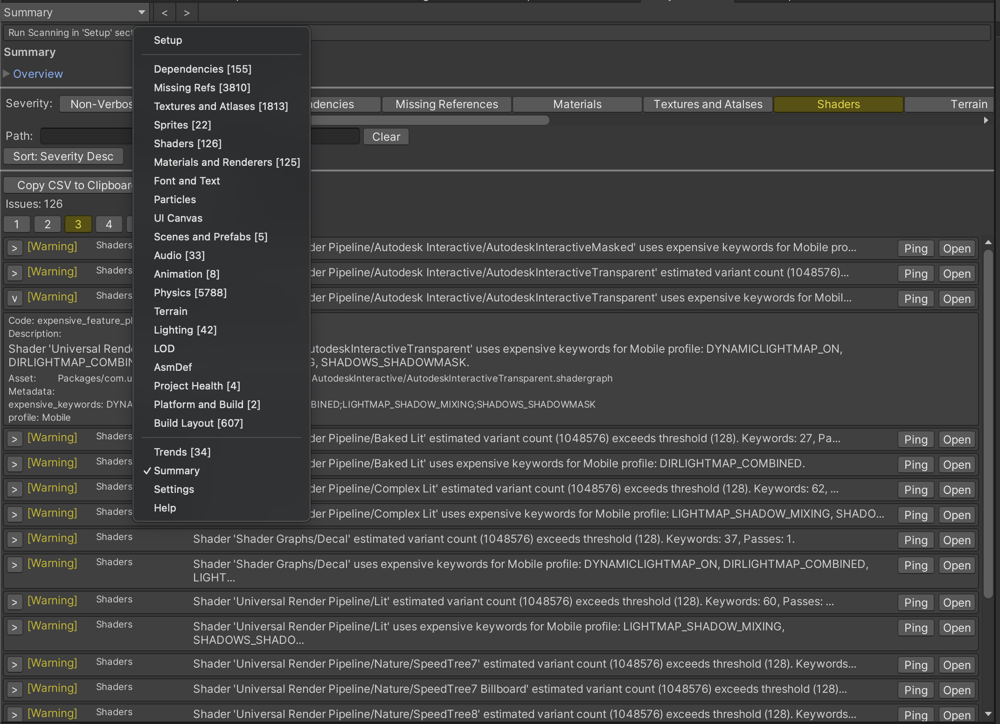

Unity Dependencies Hunter
Finds unreferenced assets by scanning every file in your Unity project — run from the Tools menu or project context menu.
I build open-source developer tools — mostly for Unity, plus desktop apps and AI-assisted workflows.
My focus is practical tooling: project diagnostics, asset health checks, and utilities you can reach for every day.
Everything here is MIT or BSD-3-Clause. Contributions and issue reports are welcome.
Start here — full catalogs are in the nav
Finds unreferenced assets by scanning every file in your Unity project — run from the Tools menu or project context menu.

Detects missing references by scanning asset GUIDs across the project — find broken links before they surface as runtime errors or build failures.

Unified Editor and MCP tool for project health — dependencies, materials, shaders, Addressables, and automated CI gates.

Desktop workspace for specs, notes, and project files — folder-backed workspaces, markdown editing, and workspace-scoped AI agents.

Editor tools for unused assets, missing references, texture issues, shaders, Addressables layouts, and unified scanning.

Cross-platform apps built with Tauri and Svelte — workspaces, markdown editors, and utilities for everyday dev workflows.

MCP servers and editor integrations so assistants can run project scans, diagnostics, and batch checks on real codebases.